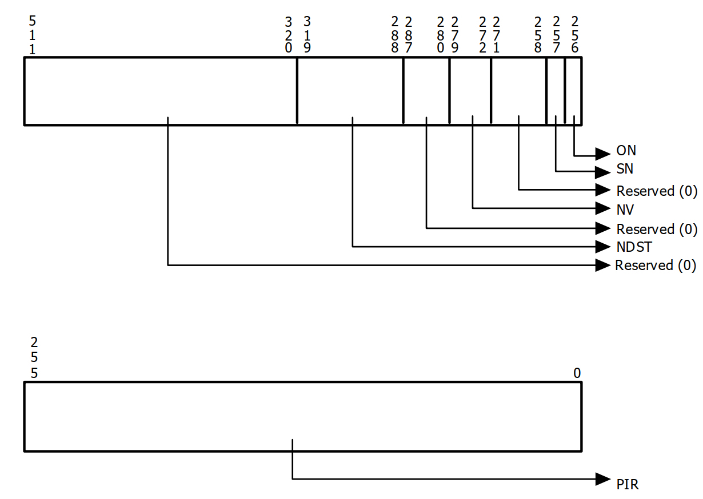

序言
interrupt post是iommu硬件在interrupt remapping功能上做的一个扩展，在这种机制使能的情况下直通设备的中断注入可以避免vcpu的退出和vmm的参与，从而减少直通场景下的虚拟化开销。按照惯例我们还是先讲一下硬件层面的机制和软件层的使能。
硬件层机制
iommu硬件上是通过capability register(CAP_REG)当中的PI这个field来表示其是否支持posted interrupt，具体的格式如下

另外，在IRTE(interrupt remap table entry) 的格式当中IM位置1表示中断模式为posted interrupt
结合图2我们来介绍一下posted interrupts irte当中需要重点关注的field。
-
Posted Descriptor Address High bits 127:96 表示Posted interrupt Descriptor内存地址的63:32位
-
Posted Descriptor Address Low bits 63:38 表示Posted Interrup Descriptor内存地址的31:6位
-
Urgent(URG) 表示这个中断是否需要及时被处理
-
vector bits 23:16 注意这个跟interrupt remapping 的irte当中的vector有本质的区别；在interrupt remapping 场景下这个vector就是要投递的中断向量，而interrupt post场景下，硬件通过个vector来计算需要将Post interrut request的哪一位置上。
下面我们来介绍一下Posted Interrupt Decsriptor，具体的format如下

- NDST ： Notification Destination
表示中断要投递到的目标物理cpu APIC-ID(也就是vcpu所在的物理cpu)，这里又分为两种场景：一种是xAPIC的场景，bits 303:296表示 APIC Destionationdi[7:0]，一种是x2APIC场景，则 bits 319:288 表示APIC DestionationID[31:0]
-
NV：Notification Vector 这里的vector主要是用来做一些事件的通知，具体在后面的软件层的分析当中会详细介绍。
-
SN：Suppress Notification
如果置位，则non-urgent的中断通知事件将会被抑制。
- ON：Outstanding Notificaion
如果置位则表示有pending 的中断通知事件待处理，通常情况下ON位一般是软件即vmm侧清理，iommu硬件置位。
- PIR：Post Interrupt Request 用来记录中断请求的vector，大小为256 bits，每个bit表示一个vector。
下面我们来看iommu硬件对posted interrupt 的处理流程：
-
硬件读取IRTE的IM field，如果为1则：
- 硬件以posted interrupt的格式来解析IRTE
- 从IRTE当中读取PID，vector value, URG
-
硬件对posted-interrupt descriptor进行read-modify-write 原子操作具体流程如下
- iommu 硬件 ECAP_REG的MTS(memory type support)置1，且MTS为write-back(WB)。WB模式下对主存的读取或者写入操作时都会被cache。另外，对cache的写入并不会立即sync到主存里面，这些写入的内部会一直累积在cache当中，只有当需要释放cache空间时这些内容才会被写入到内存。
- 硬件从PID读取相关的内容，同时将cache-line设置为E状态即当前的数据只存在于这个cache line当中且数据跟主存一致
- 根据vector计算出PIR当中需要置上的位。
- 计算X=((0N == 0) &(URG|(SN == 0))) 的值，如果X == 1则设置ON位。
- 让cache-line设置为全局可观察状态，这样其他的cache agent就可以嗅探到这个cache的相关修改。完成这一步之后在某些时候将cache的值写回主存。
-
如果X == 1则具体的中断通知事件流程如下：
- 硬件从NSDT field读取目标物理cpu的apic-id，从NV field拿到 notification interrupt 的中断vector。
- 硬件格式化出一个notification interrupt，其中Delivery mode设置为Fixed(000b)，Re-direction Hint field被设置为0b，Trigger Mode 为Edge， Trigger Mode Level 为Asserted
- cpu收到notifcation之后如果此时vcpu在non-root模式，则vmx硬件会将pir对应的vector自动syc到vIRR当中(这个主要依赖于apicv，因此如果apicv没有使能的话则posted interrupt不能正常使用)，这样vcpu在non-root模式下就把这个中断处理了。
软件使能
vmm会为每个vcpu(具体在per vcpu的vcpu_vmx数据结构当中)创建一个pi_desc的数据结构，具体如下
struct pi_desc {
u32 pir[8]; /* Posted interrupt requested */
union {
struct {
/* bit 256 - Outstanding Notification */
u16 on : 1,
/* bit 257 - Suppress Notification */
sn : 1,
/* bit 271:258 - Reserved */
rsvd_1 : 14;
/* bit 279:272 - Notification Vector */
u8 nv;
/* bit 287:280 - Reserved */
u8 rsvd_2;
/* bit 319:288 - Notification Destination */
u32 ndst;
};
u64 control;
};
u32 rsvd[6];
} __aligned(64);
上图的数据结构跟硬件定义是一一对应的。接着我们看一下posted interrupt的在软件层面的相关设置，在interrupt remapping 使能的时候会给硬件中断创建irqfd(建议大家先看一下深入了解iommu系列四:interrupt remapping工作机制解析 这篇文章)，其中有一个consumer
irqfd->consumer.add_producer = kvm_arch_irq_bypass_add_producer
这个add_producer函数会调用kvm_x86_ops->update_pi_irte ，我们来看一下这个函数核心逻辑
/*
* VT-d PI cannot support posting multicast/broadcast
* interrupts to a vCPU, we still use interrupt remapping
* for these kind of interrupts.
*
* For lowest-priority interrupts, we only support
* those with single CPU as the destination, e.g. user
* configures the interrupts via /proc/irq or uses
* irqbalance to make the interrupts single-CPU.
*
* We will support full lowest-priority interrupt later.
*/
kvm_set_msi_irq(kvm, e, &irq);
if (!kvm_intr_is_single_vcpu(kvm, &irq, &vcpu)) {
/*
* Make sure the IRTE is in remapped mode if
* we don't handle it in posted mode.
*/
ret = irq_set_vcpu_affinity(host_irq, NULL);
if (ret < 0) {
printk(KERN_INFO
"failed to back to remapped mode, irq: %u\n",
host_irq);
goto out;
}
continue;
}
vcpu_info.pi_desc_addr = __pa(vcpu_to_pi_desc(vcpu));
vcpu_info.vector = irq.vector;
trace_kvm_pi_irte_update(host_irq, vcpu->vcpu_id, e->gsi,
vcpu_info.vector, vcpu_info.pi_desc_addr, set);
if (set)
ret = irq_set_vcpu_affinity(host_irq, &vcpu_info);
else
ret = irq_set_vcpu_affinity(host_irq, NULL);
上面的逻辑截取至 vmx_update_pi_irte 函数，首先posted interrupt只支持msi 或者msix中断，其次多播和广播的中断也是posted interrupt不支持的。所以函数逻辑首先判断中断注入对象是不是single vcpu，如果不是则还是要走 remapped mode。如果是则开始对PID 相关的数据结构进行初始化，从这里面也能看到vector也就是需要注入到guest当中的中断向量。接着如果set为true则调用irq_set_vcpu_affinity， 这个函数最终会调到这个irq所属于的irq chip的
chip->irq_set_vcpu_affinity(data, vcpu_info)
从 interrupt remapping的那篇文章我们知道这个chip是 intel_ir_chip ，因此对应的具体的callback函数为 intel_ir_set_vcpu_affinity。接下来看一下这个函数的具体逻辑
static int intel_ir_set_vcpu_affinity(struct irq_data *data, void *info)
{
struct intel_ir_data *ir_data = data->chip_data;
struct vcpu_data *vcpu_pi_info = info;
/* stop posting interrupts, back to remapping mode */
if (!vcpu_pi_info) {
modify_irte(&ir_data->irq_2_iommu, &ir_data->irte_entry);
} else {
struct irte irte_pi;
/*
* We are not caching the posted interrupt entry. We
* copy the data from the remapped entry and modify
* the fields which are relevant for posted mode. The
* cached remapped entry is used for switching back to
* remapped mode.
*/
memset(&irte_pi, 0, sizeof(irte_pi));
dmar_copy_shared_irte(&irte_pi, &ir_data->irte_entry);
/* Update the posted mode fields */
irte_pi.p_pst = 1;
irte_pi.p_urgent = 0;
irte_pi.p_vector = vcpu_pi_info->vector;
irte_pi.pda_l = (vcpu_pi_info->pi_desc_addr >>
(32 - PDA_LOW_BIT)) & ~(-1UL << PDA_LOW_BIT);
irte_pi.pda_h = (vcpu_pi_info->pi_desc_addr >> 32) &
~(-1UL << PDA_HIGH_BIT);
modify_irte(&ir_data->irq_2_iommu, &irte_pi);
}
return 0;
}
在这个函数实现里面，irq_data->irte_entry里面仍然是remapped mode，然后通过copy一份副本将其修改成 posted mode，最后通过modify_irte 这个函数将irte写入到iommu硬件当中。至此，posted interrupt mode的irte 设置成功。
说完posted interrupt mode irte设置之后，下面我们来讲一下vmm 是如何使用 posted interrupt来delivery 中断的。这里需要再多讲几句，posted interrupt 应用场景有两类：一类是直通设备场景硬件直接将设备中断注入到guest里面，另外一类是vmm侧通过posted interrupt机制来实现模拟设备的中断注入比如virtio设备。先说说直通设备的场景，在这种场景下中断注入完全不需要vmm参与，整个流程完全由硬件完成(前提是说vcpu刚好处于non-root模式)。但是有没有想过设备在注入中断的的时候刚好vcpu在root模式下这个时候要怎么操作呢？这个就涉及到vcpu状态跟interrupt remapping硬件之间的同步了。接下来我们就来看一下硬件中断注入与vcpu 所处于的运行状态之间是如何同步的(vcpu running状态这里就不讲了)。
-
vcpu 被抢占 vcpu线程退到root模式时可能会被高优先级的任务抢占，在这个过程当中在vmm侧与posted interrput有关的核心逻辑为
vmx_sched_out->vcpu_put->vmx_vcpu_pi_put，其中vmx_vcpu_pi_put会将SN置上，那么在这种场景下硬件就不会触发notification interrupt 给相应的cpu。 -
vcpu 再次被调度 vcpu 进程再次被调度的时候，在vmm侧的核心逻辑为
vmx_sched_in->vcpu_load->vmx_vcpu_pi_load，下面来看一下vmx_vcpu_pi_load这个函数核心逻辑在于如果vcpu当前运行的cpu跟之前的cpu不一样则需要更新pid_desc当中的NDST位，另外如果sn位被置上则需要clean掉。这里有个问题就是当vmm侧在修改的时候可能iommu的硬件侧也可能在修改，因此为了解决这个问题在实现当中使用了cmpxchg64函数来实现atomic read-modify-write。
......
/* The full case. */
do {
old.control = new.control = pi_desc->control;
dest = cpu_physical_id(cpu);
if (x2apic_enabled())
new.ndst = dest;
else
new.ndst = (dest << 8) & 0xFF00;
new.sn = 0;
} while (cmpxchg64(&pi_desc->control, old.control,
new.control) != old.control);
......
- vcpu block状态
当vcpu 主动halt出来时会进入block，再进入到真正block之前会有一个pre block的操作。在这个过程会调用
pi_pre_block函数对pir_desc当中相关field进行修正，下面来看一下这个函数的具体逻辑：
local_irq_disable();
if (!WARN_ON_ONCE(vcpu->pre_pcpu != -1)) {
vcpu->pre_pcpu = vcpu->cpu;
spin_lock(&per_cpu(blocked_vcpu_on_cpu_lock, vcpu->pre_pcpu));
list_add_tail(&vcpu->blocked_vcpu_list,
&per_cpu(blocked_vcpu_on_cpu,
vcpu->pre_pcpu));
spin_unlock(&per_cpu(blocked_vcpu_on_cpu_lock, vcpu->pre_pcpu));
}
这部分逻辑是判断vcpu的pre_cpu是否为-1(default value 为-1)，如果不为-1则打个warning stack；如果为-1则将pre_cpu赋值为当前vcpu所在的物理cpu，并且把vcpu放入到这个物理cpu的 block_vcpu_list当中。接着往下看
do {
old.control = new.control = pi_desc->control;
WARN((pi_desc->sn == 1),
"Warning: SN field of posted-interrupts "
"is set before blocking\n");
/*
* Since vCPU can be preempted during this process,
* vcpu->cpu could be different with pre_pcpu, we
* need to set pre_pcpu as the destination of wakeup
* notification event, then we can find the right vCPU
* to wakeup in wakeup handler if interrupts happen
* when the vCPU is in blocked state.
*/
dest = cpu_physical_id(vcpu->pre_pcpu);
if (x2apic_enabled())
new.ndst = dest;
else
new.ndst = (dest << 8) & 0xFF00;
/* set 'NV' to 'wakeup vector' */
new.nv = POSTED_INTR_WAKEUP_VECTOR;
} while (cmpxchg64(&pi_desc->control, old.control,
new.control) != old.control);
这部分逻辑当中首先判断SN是否被置上，如果置上则打印一下warning。原因是说vcpu是主动halt出来并不是被抢占的所以理论是不会走到pi_put的相关逻辑的，但是也不影响正常功能所以只是warning一下。接着仍然是通过cmpxchg64这个原子操作将NDST设置为pre_pcpu，同时将nv设置为POSTED_INTR_WAKEUP_VECTOR 。这里多说几句nv即notification vector有两种：一种就是 POSTED_INTR_VECTOR 即当cpu收到这个中断时如果vcpu处于non-root时则vmx硬件把自动把pir sync到virr即在non-root模式将中断处理掉；另外一种就是前面提到的POSTED_INTR_WAKEUP_VECTOR ，当cpu收到这个中断是就会把block在该pcpu上的block_vcpu_list上的vcpu唤醒，然后在vmentry过程中将中断注入到vm当中，至于这个具体的注入逻辑将在后面进行具体介绍。
/* We should not block the vCPU if an interrupt is posted for it. */
if (pi_test_on(pi_desc) == 1)
__pi_post_block(vcpu);
local_irq_enable();
return (vcpu->pre_pcpu == -1)
上面的逻辑比较简单，如果硬件已经将on设置上说明硬件侧准备发送notification interrupt了，所以不能让vcpu进行block状态，这里有调用__pi_post_block(vcpu)， 下面我们来讲一下这个函数。
当vcpu结束block状态时在post_block阶段也会调用__pi_post_block(vcpu) ，具体实现如下
static void __pi_post_block(struct kvm_vcpu *vcpu)
{
struct pi_desc *pi_desc = vcpu_to_pi_desc(vcpu);
struct pi_desc old, new;
unsigned int dest;
do {
old.control = new.control = pi_desc->control;
WARN(old.nv != POSTED_INTR_WAKEUP_VECTOR,
"Wakeup handler not enabled while the VCPU is blocked\n");
dest = cpu_physical_id(vcpu->cpu);
if (x2apic_enabled())
new.ndst = dest;
else
new.ndst = (dest << 8) & 0xFF00;
/* set 'NV' to 'notification vector' */
new.nv = POSTED_INTR_VECTOR;
} while (cmpxchg64(&pi_desc->control, old.control,
new.control) != old.control);
if (!WARN_ON_ONCE(vcpu->pre_pcpu == -1)) {
spin_lock(&per_cpu(blocked_vcpu_on_cpu_lock, vcpu->pre_pcpu));
list_del(&vcpu->blocked_vcpu_list);
spin_unlock(&per_cpu(blocked_vcpu_on_cpu_lock, vcpu->pre_pcpu));
vcpu->pre_pcpu = -1;
}
}
看一下这个函数的具体逻辑：先将pi_desc的NDST设置为vcpu当前要运行的物理cpu，将nv设置为POSTED_INTR_VECTOR ，然后如果vcpu->pre_pcpu 不是-1则vcpu从该物理cpu的blocked_vcpu_list当中删除掉，然后将pre_pcpu再重置为-1。
上面花了点篇幅介绍了一下在vcpu处于不同运行状态时是如何跟posted interrupt 硬件之间同步相关信息的。但是这种同步并不能保证严格意义上的一致性，即iommu硬件发出POSTED_INTR_VECTOR 时vcpu可能处于root模式，那在这种情况下要如何处理呢？首先，内核是注册了这个vector的中断处理函数的即系统是能够响应这个中断的只是说这个vector的中断处理函数为空；其次当vcpu再次进入到vm时会将pir sync到virr当中即中断也不会丢，唯一影响的可能就是中断处理的实时性。
回到vmm侧如何通过posted interrupt 机制delivery 模拟设备的中断。以virtio设备为例，virtio设备主要是通过irqfd来触发中断(irqfd的setup流程这里就不细讲了)，整个中断的触发流程如下
irqfd_inject->kvm_set_irq->
kvm_set_msi->kvm_irq_delivery_to_apic
最终会调到 __apic_accept_irq->deliver_posted_interrupt->vmx_deliver_posted_interrupt
static void vmx_deliver_posted_interrupt(struct kvm_vcpu *vcpu, int vector)
{
struct vcpu_vmx *vmx = to_vmx(vcpu);
int r;
r = vmx_deliver_nested_posted_interrupt(vcpu, vector);
if (!r)
return;
if (pi_test_and_set_pir(vector, vmx->pi_desc))
return;
/* If a previous notification has sent the IPI, nothing to do. */
if (pi_test_and_set_on(vmx->pi_desc))
return;
if (!kvm_vcpu_trigger_posted_interrupt(vcpu, false))
kvm_vcpu_kick(vcpu);
}
看一下上面函数的具体实现：如果是nested模式下则走nested posted interrupt，接着在软件侧模仿pi 硬件的相关操作如设置pir，置on位；如果这两个都已经设置过了则说明已经有一个中断流程在进行当中了(irqfd是可以连续触发的)，接着看一下kvm_vcpu_trigger_posted_interrupt
static inline bool kvm_vcpu_trigger_posted_interrupt(struct kvm_vcpu *vcpu,
bool nested)
{
#ifdef CONFIG_SMP
int pi_vec = nested ? POSTED_INTR_NESTED_VECTOR : POSTED_INTR_VECTOR;
if (vcpu->mode == IN_GUEST_MODE) {
/*
* The vector of interrupt to be delivered to vcpu had
* been set in PIR before this function.
*
* Following cases will be reached in this block, and
* we always send a notification event in all cases as
* explained below.
*
* Case 1: vcpu keeps in non-root mode. Sending a
* notification event posts the interrupt to vcpu.
*
* Case 2: vcpu exits to root mode and is still
* runnable. PIR will be synced to vIRR before the
* next vcpu entry. Sending a notification event in
* this case has no effect, as vcpu is not in root
* mode.
*
* Case 3: vcpu exits to root mode and is blocked.
* vcpu_block() has already synced PIR to vIRR and
* never blocks vcpu if vIRR is not cleared. Therefore,
* a blocked vcpu here does not wait for any requested
* interrupts in PIR, and sending a notification event
* which has no effect is safe here.
*/
apic->send_IPI_mask(get_cpu_mask(vcpu->cpu), pi_vec);
return true;
}
#endif
return false;
}
函数当中的注释已经说的比较清楚，这里简单说几句。如果目标vcpu在non-root模式，则通过给该vcpu所在的物理cpu发送POSTED_INTR_VECTOR(模拟pi硬件的行为) ，然后在non-root模式下将中断处理掉。如果vcpu在root模式，则通过kvm_vcpu_kick将vcpu唤醒，然后vcpu在vmentry的过程中会将中断处理掉，具体可以仔细阅读一下这个函数kvm_x86_ops->sync_pir_to_irr 。
总结和扩展
posted interrupt 机制提升了虚拟化场景下直通设备的中断注入效率，同时利用这种机制我们也可以减少其他中断场景的开销，比如字节虚拟化同学基于posted interrupt机制提出的pvipi方案，其性能比目前intel 的ipi virtualizaion 性能要好很多。当然，还有其他一些比较有意思的玩法，后面有机会我们也会对外expose。
Reference
- Minimizing VMExits in Private Cloud by Aggressive PV IPI and Passthrough Timer - Qiao Hua & Zhou Yibo, ByteDance
- https://patchwork.kernel.org/project/kvm/patch/0C23CC2D-B770-43D0-8215-20CE591F2E8F@bytedance.com/